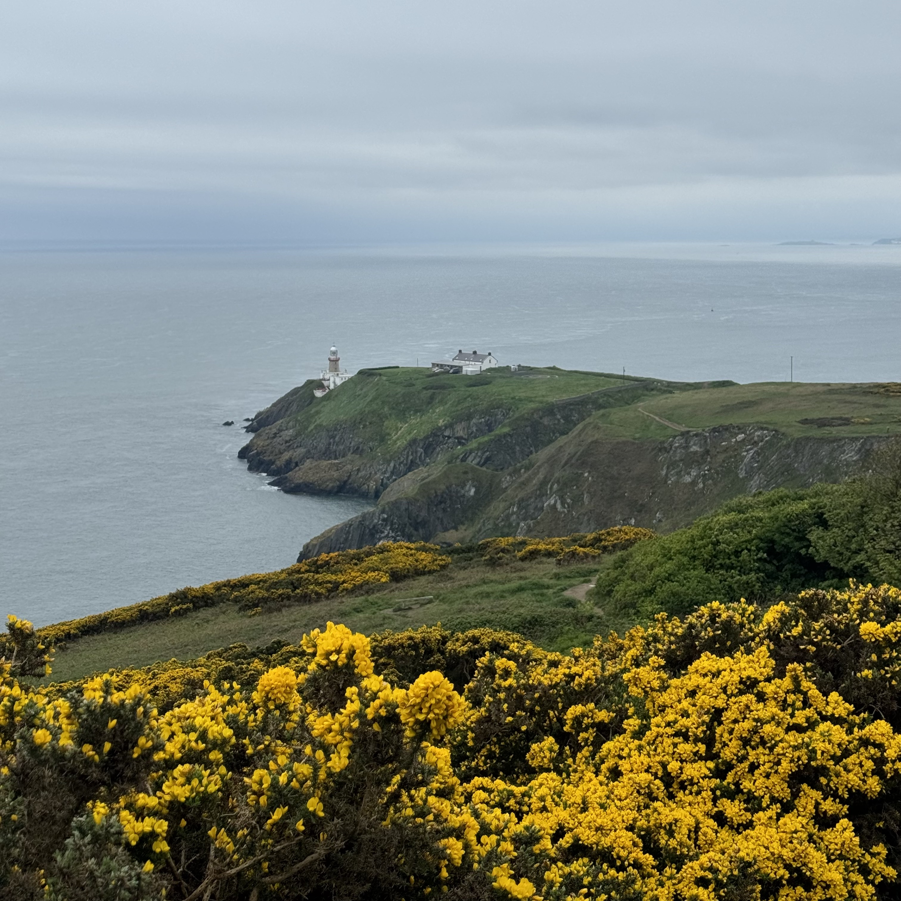
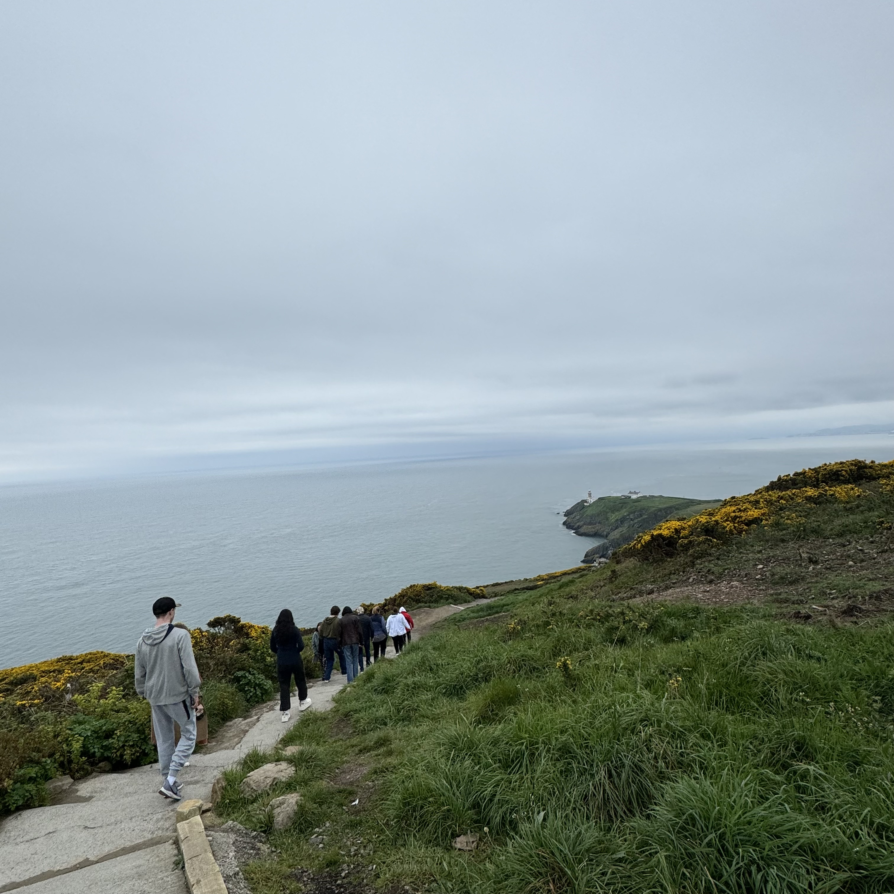
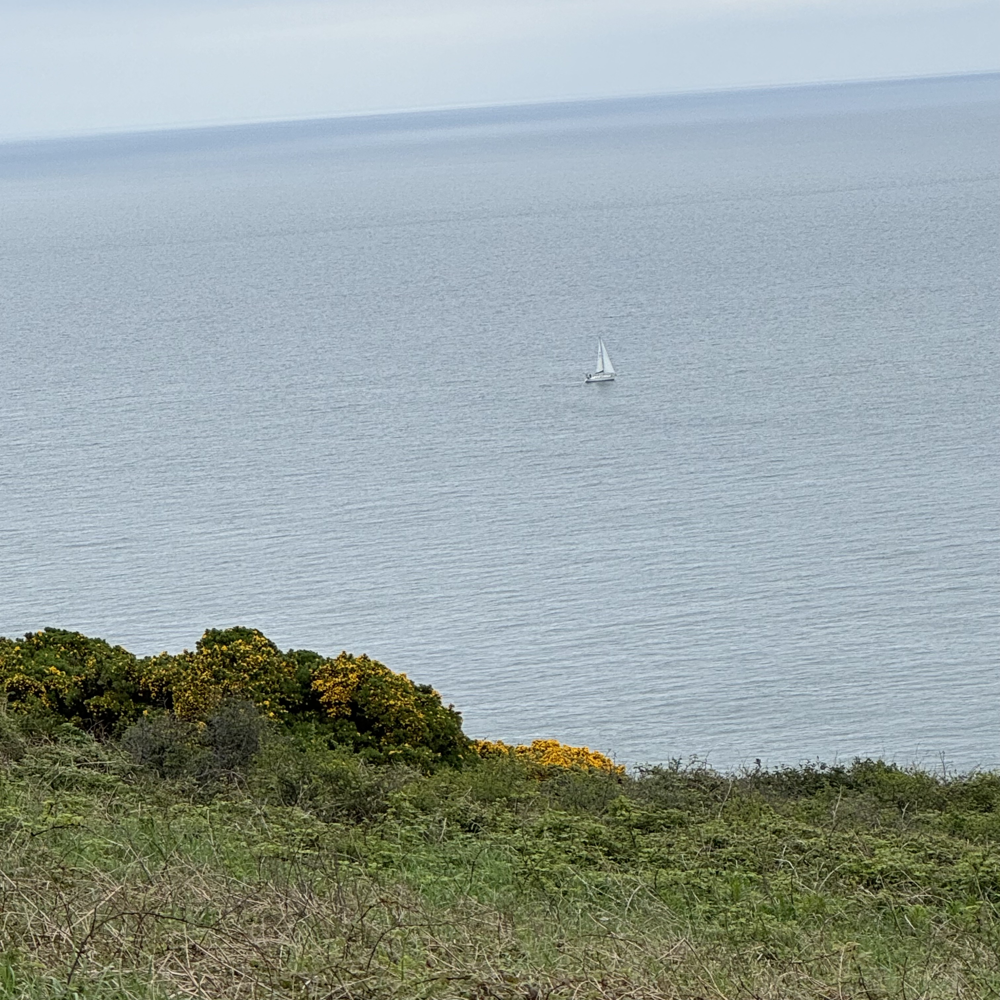

Howth
Howth is a small fishing town about 18 kilometers (11 miles) outside of Dublin. The charming costal town is filled with cute gift shops, a market, various restaurants, and much more. The best views of the city and Dublin Day are from the summit, where you can hike out towards the lighthouse or choose from a few differnt trails that vary in length and difficulty.
- Bog of Frogs Loop (15 km, hard)
- Howth Black Linn Loop (8 km, moderate)
- Howth Cliff Loop (8 km, moderate)
- Howth and Bailey Lighthouse Loop (7.4 km, moderate)
- Howth Tramline Loop (7.1 km, moderate)


